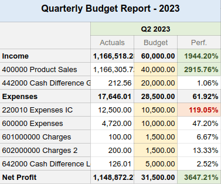

Plantillas¶
Las plantillas de las hojas de cálculo le permiten crear hojas de cálculo rápidamente sin empezar desde cero.
Tendrá disponibles varias plantillas ya listas al momento de crear una nueva hoja de cálculo desde la aplicación Documentos, por ejemplo:

También puede guardar cualquier hoja de cálculo como plantilla y gestionar y editar plantillas existentes.
Plantillas predeterminadas¶
Contabilidad: reportes presupuestarios¶
Los reportes presupuestarios comparan los gastos reales de una empresa con el presupuesto que se definió en un periodo específico. Hay dos plantillas disponibles: uno utiliza intervalos trimestrales (Reporte presupuestario (trimestral)), mientras que el otro utiliza intervalos mensuales (Reporte presupuestario (mensual)).
Las celdas en la columna de Cifras reales se completan automáticamente con la cantidad de dinero ganada y gastada a lo largo del periodo correspondiente (mensual o trimestral). Los datos se toman de apuntes contables ya publicados desde las cuentas de ingresos y gastos.
Advertencia
Los apuntes en el tipo de cuenta Otros ingresos no se consideran al momento de recolectar datos.
Para analizar el rendimiento de su presupuesto, complete las celdas de la columna Presupuesto con la cantidad de dinero que espera ganar (filas de :guilabel:Ingresos`) y gastar (filas de Gastos) a lo largo del periodo correspondiente y por cuenta. Luego, la columna de rendimiento (Rend.) compara los datos de las cifras reales con su presupuesto correspondiente expresado en porcentajes.
Por último, la fila Ingresos netos representa el total de ingresos menos el total de gastos para las columnas de Gastos reales y Presupuesto.
CRM: reporte de ingresos¶
Tendrá disponibles dos reportes de ingresos. El reporte de ingresos (Mensual) que está dedicado a ingresos no recurrentes (NRR), mientras que el reporte de ingresos MRR/NRR (mensual) cubre tanto los ingresos recurrentes como los no recurrentes (MRR).
Truco
Active Ingresos recurrentes en .

Las celdas en la columna Cifras reales se completan automáticamente con la cantidad de los ingresos mensuales de las oportunidades ganadas.
Para calcular el rendimiento de los ingresos, complete los objetivos mensuales de los ingresos.
Para la hoja de Ingresos por equipo, complete las celdas de las columnas Objetivos para cada equipo de ventas.
Para la hoja de Ingresos por vendedor, abra la hoja de Objetivos y complete las celdas junto a cada vendedor. Utilice la siguiente tabla factor mensual, para adaptar los objetivos principales dependiendo del mes del año.
Luego, la columna de rendimiento (Rend.) compara las cifras reales con su presupuesto correspondiente expresado en porcentajes.
Finalmente, la columna Pronóstico reúne los ingresos mensuales de los leads multiplicados por su porcentaje de Probabilidad.
Nota
Para cifras reales y pronósticos:
La fecha de cierre esperado que se encuentra en los leads se usa para asignarles un mes.
El ingreso recurrente mensual se usa incluso si el número de meses del plan recurrente está establecido en un valor diferente a 1 mes. Por ejemplo, un plan de ingresos anual está dividido en 12 meses.
Ventas: comisión de venta¶
This report presents the monthly commission earned or due to each salesperson.

La columna de Tasa ya está completada con la tasa de porcentaje de la pestaña Tasas, la cual puede personalizar para cada categoría de producto de acuerdo con las políticas de la empresa. Ajustar la tasa para una categoría de producto específica actualizará automáticamente el importe de comisión para esa categoría.
La columna de Facturado muestra el importe total de facturas no tributables agrupadas por vendedor y mes.
Por último, la columna de Comisión se calcula al multiplicar la cantidad facturada por el porcentaje de la tasa.
Guardar una hoja de cálculo como plantilla.¶
Cualquier hoja de cálculo se puede guardar como plantilla. Desde la barra de menú, haga clic en . Si es necesario, modifíque el nombre de la plantilla y haga clic en Confirmar.
Nota
Las plantillas se encuentran disponibles para todos los usuarios de la base de datos.
Gestione y edite plantillas¶
Gestione sus plantillas en . Quite el filtro Mis plantillas para ver todas las plantillas en la base de datos.
Para editar una plantilla existente, haga clic en ✎ Editar junto a la plantilla que desee. Las modificaciones se guardan automáticamente.
Truco
Utilice el botón de descargar que se encuentra en la columna Datos para exportar una plantilla en formato JSON. El archivo se puede importar a otra base de datos.